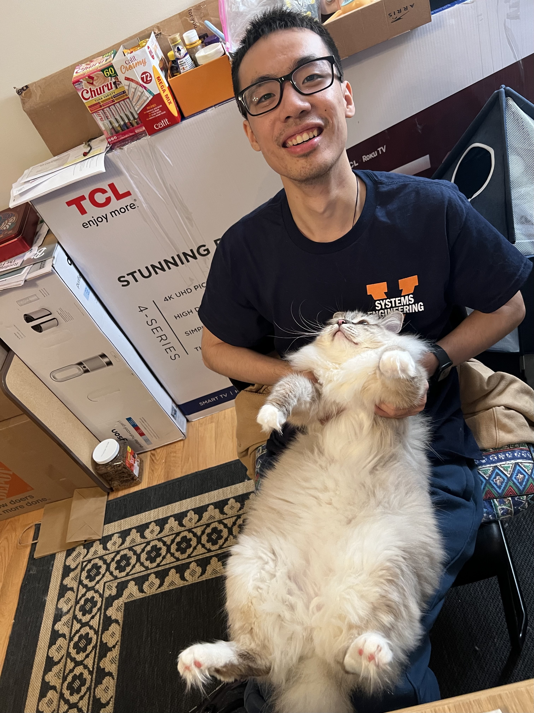

|
Zhenyu lei
⚽️ About me
👌 Hi, I'm a PhD student at the University of Virginia.
Interests: LLM, Graph, AI for Science, and Spatial-Temporal.
PhD: Major -- ECE; Lab -- VAST; Advisor -- Jundong Li.
Undergrad: Major -- Physics; Lab -- LUD; Advisor -- Minnan Luo.
E-Mail: vjd5zr at virginia dot edu (previous: Fischer@stu.xjtu.edu.cn)
CV /
Scholar /
Twitter /
Github
😊 Currently looking for internship!
|

|
Harnessing Large Language Models for Disaster Management: A Survey
Zhenyu Lei,
Yushun Dong,
Weiyu Li,
Jing Ma,
Rong Ding,
Qi Wang,
Jundong Li,
Preprint
BrainMAP: Learning Multiple Activation Pathways in Brain Networks
Song Wang*,
Zhenyu Lei*,
Zhen Tan,
Jiaqi Ding,
Xinyu Zhao,
Yushun Dong,
Guorong Wu,
Tianlong Chen,
Chen Chen,
Aiying Zhang,
Jundong Li,
AAAI 2025 (Oral)
ST-FiT: Inductive Spatial-Temporal Forecasting with Limited Training Data
Zhenyu Lei,
Yushun Dong,
Jundong Li,
Chen Chen
AAAI 2025 (Oral)
PyGDebias: A Python Library for Debiasing in Graph Learning
Yushun Dong,
Zhenyu Lei,
Zaiyi Zheng,
Song Wang,
Jing Ma,
Alex Jing Huang,
Jundong Li,
WWW 2024
BIC: Twitter Bot Detection with Text-Graph Interaction and Semantic Consistency
Zhenyu Lei*,
Herun Wan*,
Wenqian Zhang,
Shangbin Feng,
Jundong Li,
Qinghua Zheng,
Minnan Luo,
ACL 2023
|
🎉 Miscellaneous
Apart from research, I also enjoy every part of my life. I like to sing, play badmintons, and hold a running habit. I am also interested in making new friends either from research circles or in daily life to share and record stories. |
|
{kind=link}